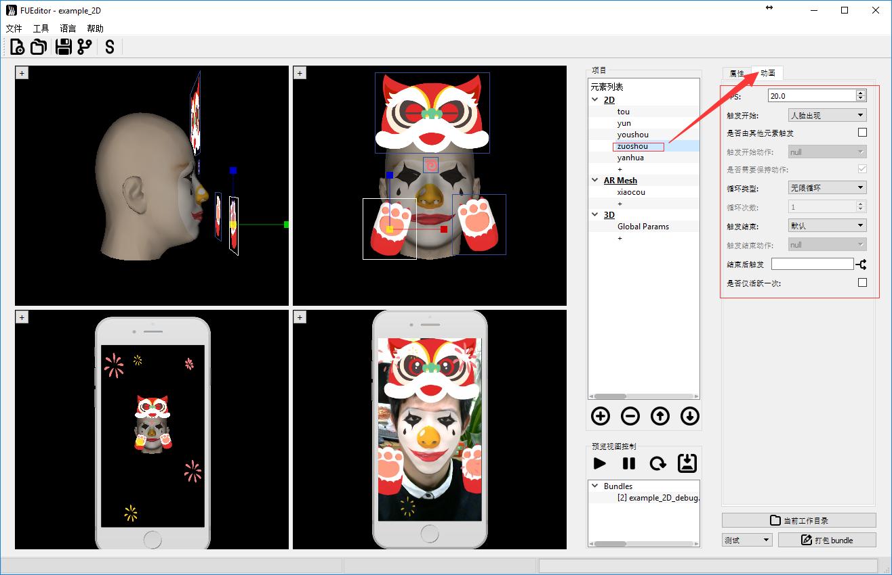
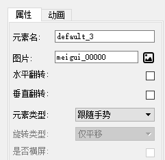
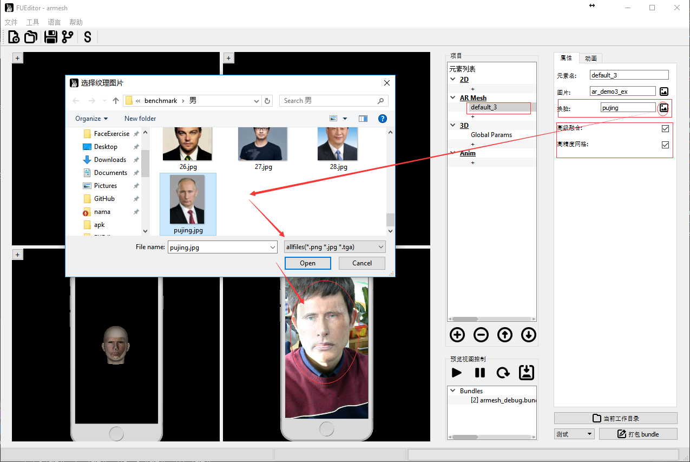
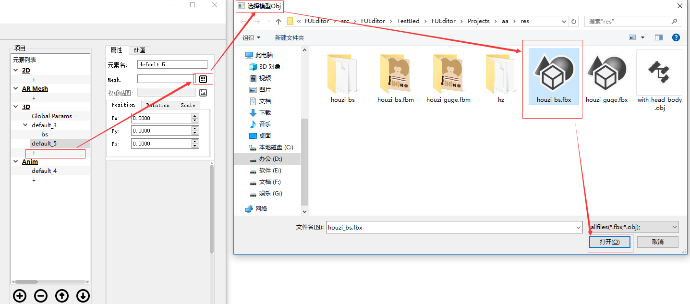
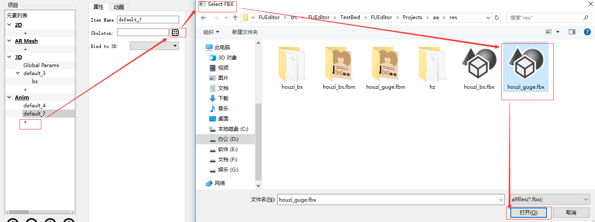
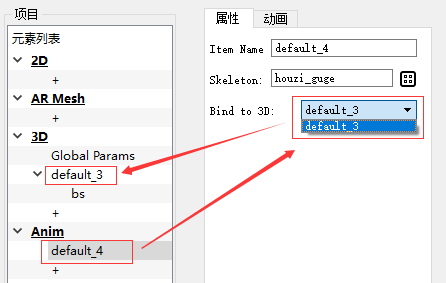
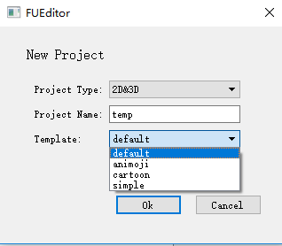

FUEditor 使用文档简介1. 快速安装2. 使用2.1 新建项目2.2 2D道具编辑2.3 2D动画逻辑2.4 特定脸部动作2.4.1 内置特定动作2.4.2 自定义脸部动作2.5 手势动作2.6 组动画2.6.1 添加组动画2.6.2 元素组构成2.6.3 调整组元素顺序3. AR Mesh 制作3.1 普通AR Mesh贴图制作3.2 高级换脸功能4. 静态3D道具制作4.1 道具制作4.2 材质调整4.2.1 材质复制粘贴4.3 贴图动画4.4 3D道具水平翻转5. 动画制作6. Avatar制作7. 人像驱动7.1 简介7.2 效果7.3 使用方法7.4 人像驱动道具制作8. 高级视频滤镜9. 打包道具10. 项目保存与切换11. 高级功能自定义动画脚本12.自定义模板13. 实时预览14. 工具15. 常用术语解释
FUEditor 使用文档
简介
FUEditor 是一款高效便捷的AR人脸道具编辑工具软件，为Faceunity公司的Nama SDK提供支持。
- 可以高效制作2D道具。贴纸，贴纸动画，动画组，特定脸部动作触发动画。Faceunity的2D贴纸技术本质也是3D的，有前后景深效果，侧脸时仍能紧贴人脸，而不是全部贴纸都在一个平面上。
- 可以制作AR Mesh面具。
- 可以制作3D的道具，调整材质，如花环头盔等。

1. 快速安装
系统要求
- win7/8/10 64位电脑
- 摄像头，推荐使用 Logitech C920
-FUEditor无须安装可直接使用，将FUEditor.zip解压到系统适当位置。
-目录结构解释
xxxxxxxxxx+FUEdittor\ //FUEditor根目录 -FUEditor.bat //双击点击，启动FUEditor +bins\ //FUEditor程序库 +data\ //FUEditor数据目录 +log\ //FUEditor运行日志 +Projects\ //所有道具项目的目录 +daoju1\ //道具“daoju1”项目目录 -daoju1.fuproj //道具项目“daoju1”工程文件 +build\ //已签名道具bundle（测试证书） +release\ //已签名道具bundle（正式证书） +zip\ //未签名压缩包 +fcopy\ //自定义内容目录，用于自定义脚本 +out\ //临时文件 +daoju2 //道具“daoju2”项目目录 -daoju2.fuproj //道具项目“daoju2”工程文件 ... +daoju3 //道具“daoju3”项目目录 ...启动程序
双击 FUEditor 目录中 FUEditor.bat 启动程序。显示最近项目列表，可以选择以前的项目，也可以新建项目。
查看example
FUEditor中自带一些示例项目，首次启动时，显示的项目即是示例项目，在最近项目列表中鼠标左键选择打开‘example_2D’项目。
进入示例项目，点击 按钮启动摄像头，点击
按钮启动摄像头，点击 开始预览。
开始预览。
2. 使用
2.1 新建项目
创建：点击菜单File>>New Project，或者快捷键Ctrl+N，或者点击左上边按钮。弹出对话框，选择创建项目类型，输入项目名称
创建完新项目后，界面左上角会显示FUEditor – 项目名，项目存放在 FUEditor/Projects/项目名/ 目录下。
注意：所有道具项目存放在 FUEditor/Projects 目录下，新建项目时不要重名。道具名称命名最好以“公司名缩写_设计师名缩写_道具名”规范来命名，如“fu_crt_maolian”。道具名最好不要和之前的一样，否则会覆盖掉之前打包好的道具。
FUEditor/Projects 目录下由程序创建的目录不要随意动。
2.2 2D道具编辑
- 添加：点击2D类型下"+"号创建新的元素；或者在"2D"上右键选择"添加子元素"；或者选中"2D"，点击下面
 按钮添加新元素。
按钮添加新元素。 - 删除：点击
 删除当前选中的元素。或者在元素上点右键，选择"删除"。
删除当前选中的元素。或者在元素上点右键，选择"删除"。 
- 2D元素属性：
修改查看元素的属性，在视窗中选择道具元素，或者再树状元素列表中选择元素，右边会显示对应的元素属性视图
基本属性释意：
元素名：当前元素的名称，可修改，不同元素元素名不同。
图片：点击右边图片按钮
 ，选择图片纹理，图片文件名不能是中文。
，选择图片纹理，图片文件名不能是中文。
注意：2D元素帧动画序列命名必须是“xxxx_五位数字.扩展名” 例如， xxxx_00000.png, xxxx_00001.png 帧序列，
即使没有帧动画，只有一帧也需命名为xxxx_00000.png。图片最大不能超过2000×2000。图片太大，会影响性能,建议控制在1000×1000以下。水平翻转：沿元素中心做水平翻转。
垂直翻转：沿元素中心做垂直翻转。
元素类型:
- 跟随人脸元素: 跟随人脸的元素，将跟踪人脸移动或旋转。
- 屏幕元素：屏幕元素，不会跟人脸动，不拉伸，直接绘制在屏幕。不同屏幕分辨率按照(rx,ry)在屏幕上绘制元素，(rx,ry)表示元素中心在屏幕上的比例，左上角为(0,0),右下角为(1,1)。
- 背景分割元素：背景分割元素，选择该模式的元素可以在相机画面中自动分割出人像，并替换背景为该元素内容。
注意：2D道具的group不能作为背景分割元素，只能用单个道具做背景分割。 - 全屏前景元素：全屏前景元素，不会跟人脸动，高宽拉伸绘制在全屏幕。
- 全屏背景元素：全屏背景元素，不会跟人脸动，高宽拉伸绘制在全屏幕。
旋转类型:
- 旋转平移: 跟随人脸的元素，将跟踪人脸移动和旋转。
- 仅平移：跟随人脸的元素，跟随人脸平移运动，但不旋转。
是否横屏：当元素是全屏元素时，才能选择该选项，且为横屏模式，不会跟人脸动，拉伸绘制在全屏幕。参见[横屏支持]章节。
xyz：元素的位置，可直接输入；也可以在窗口中拖动，鼠标放到坐标轴上，按住鼠标左键拖动即可。
保持图片宽高比：勾选，让元素保持原来图片的宽高比约束，调整宽或高会自动调整另一个值。取消后可自由调整宽高。
宽度：元素宽度。
高度：元素高度。
开启深度测试：当2D元素和3D元素混合使用时，给2D元素开启深度测试，能获得正确的遮挡效果。

动画参数释意：
- FPS：播放帧速率，每秒播放多少帧。
- 触发开始：当前道具从什么时候开始绘制。
- 触发开始动作：当前道具在什么人脸表情动作下触发时开始绘制。
- 是否需要保持动作：勾选时，且触发开始为“特定人脸表情动作”时，需要人脸保持某一动作，才能持续绘制道具元素。
- 循环类型：当前道具的循环播放类型。
- 触发结束：但特定条件满足时，结束当前道具元素绘制。
- 触发结束动作：当前道具在什么人脸表情动作下触发时停止绘制。
- 结束后触发: 结束触发表示当前元素结束时，激活触发其他已经结束的元素，点击右边按钮进行操作，可以用来做动画循环。例如 元素A，A的触发开始是[人脸出现]，触发结束是[特定动作X];元素B，B的触发开始是[特定动作X]且需要保持动作，结束后触发[A];那这动画是正常情况下播放A动画，当出现特定动作X时，A暂时关闭，播放B动画，B结束时，重新激活触发A，回到正常状态。
- 是否由其他元素触发: (配合上面结束后触发)当元素设置为被触发时，即使这个元素是始终绘制(屏幕初始化)的也得等，其他元素结束触发它。用于做动画序列的。
- 是否仅活跃一次：如果设置为是，那么满足触发条件，触发道具播放，当满足结束条件(特定动作、循环N次)该道具元素结束播放，结束后将不再重新触发。如果没设置为是，那么触发结束后，人脸离开屏幕再回来又能触发该元素播放。
注 1：具体动画逻辑参见2.3 2D动画逻辑 章节
注 2：当出现，全屏元素没有覆盖满全屏时，需要设置isAndroid参数，Android/iOS客户端程序里也需要fuItemSetParamd做相应的设置，否则放到手机里预览不是预期的效果
xxxxxxxxxx fuItemSetParamd(item_id, "isAndroid",1); //第一个参数为bundleid，。注 3：背景元素以及全屏元素，在集成的Nama SDK版本大于4.0.0时，全屏元素会自动跟随人脸的旋转而旋转，如果需要在道具加载时就固定了方向，要调整方向，需要在代码中调整旋转角度，调用
xxxxxxxxxx /* / 第一个参数为bundleid，最后参数为旋转度数 0，90，180，270。 / 每加90度相当于逆时针旋转90度。 */ fuItemSetParamd(item_id, "rotationAngle",90); eg. fuItemSetParamd(item_id, "rotationAngle",90);//Android 前置 fuItemSetParamd(item_id, "rotationAngle",270);//Android 后置 fuItemSetParamd(item_id, "rotationAngle",0);//非Android 平台注 4：判断道具是否结束，需要客户端主动查询道具的状态：
xxxxxxxxxx var ret1 = fuItemGetParamd(1,"hasFinish");//是否有（仅活跃一次）的元素已经结束了 var ret2 = fuItemGetParamd(1, "allFinish");//是否 全部的（仅活跃一次）的元素已经结束了 console.log(ret1, ret2);- 横屏支持：
2D属性"是否横屏"选择，只适用于全屏元素，勾选后。 在预览区，点击鼠标右键，在弹出框中选择横屏预览。
注：一旦预览框选择对应的预览模式后，跟预览框模式不一样的全屏元素将不显示，仅仅是不显示，切换模式后将重新显示，打包正常。
注：程序使用时，在加载道具后，默认竖屏模式，但需要切换横屏时，需要调用代码,
xxxxxxxxxxfuItemSetParamd(item_id, "isLandscape",1); //第一个参数为bundleid，最后参数 0-竖屏 ，1-横屏。上述 isLandscape 参数只是切换纹理图，如果旋转方向不对，需要再调用下面代码，设置rotationTexAngle，该参数仅旋转纹理图片：
xxxxxxxxxxfuItemSetParamd(item_id, "rotationTexAngle",90); //逆时针旋转90度fuItemSetParamd(item_id, "rotationTexAngle",180); //逆时针旋转90度fuItemSetParamd(item_id, "rotationTexAngle",270); //逆时针旋转90度fuItemSetParamd(item_id, "rotationTexAngle",360); //逆时针旋转90度fuItemSetParamd(item_id, "rotationTexAngle",-90); //顺时针旋转90度2.3 2D动画逻辑
单个元素，表示道具包中可编辑的最小单元。以下按照"触发开始"不同类型分类，描述各种不同条件下的动画逻辑。
触发开始 - 人脸出现：在出现人脸的时候，开始绘制元素，适用于需要人脸的元素。【当 "触发结束" 或者 "循环类型" 触发了结束后，暂时结束道具绘制，不管是否有人脸，当再次出现人脸时（有->无->有），再次绘制道具】。
触发结束 - 默认：正常按照循环类型进行绘制。
- 循环类型 - 无限循环：则一直绘制该元素直到人脸消失，人脸出现时又重新绘制。
- 循环类型 - 循环N次：循环绘制该元素N次(循环N次)，N 次后停止 该绘制该元素，暂停该道具。
- 循环类型 - 循环1次并停留：播放道具一个循环后，停在最后一帧。
触发结束 - 人脸出现：【未定义操作】
触发结束 - 屏幕初始化：【未定义操作】
触发结束 - 特定脸部动作：按循环类型进行绘制，如触发特定脸部动作,停止当前元素，暂停该道具。
- 循环类型 - 无限循环：则一直绘制该元素直到人脸消失。
- 循环类型 - 循环N次：循环绘制该元素N次(循环N次)，N次后停止该绘制该元素，暂停该道具。
- 循环类型 - 循环1次并停留：播放该元素一个循环后，停在最后一帧。
触发开始 - 屏幕初始化：道具加载后，立即绘制，无须人脸出现，适用于一些全屏或背景元素。【当 "触发结束" 或者 "循环类型" 触发了结束后，暂时结束道具绘制，不管是否有人脸。再次从有人脸到无人脸时（有/无->有-> 无），再次绘制道具】
触发结束 - 默认：无特殊触发条件，按照循环类型逻辑。
- 循环类型 - 无限循环：一直绘制该元素，无论人脸有无。
- 循环类型 - 循环N次： 循环绘制该元素N次(循环N次)，N次后停止该绘制该元素，暂停绘制，等待下次有脸到无脸的切换。
- 循环类型 - 循环1次并停留：播放道具一个循环后，停在最后一帧。
触发结束 - 人脸出现：当人脸出现时，暂停绘制，等待下次有脸到无 脸的切换。当没有人脸出现时，按照循环类型控制逻辑。
触发结束 - 屏幕初始化【未定义操作】
触发结束 - 特定脸部动作：当出现特定人脸动作时，暂停绘制，等待下次 有脸到无脸的切换。当没有人脸出现时，按照循环类型控制逻辑。
触发开始 - 特定脸部动作：道具加载后，需等特定人脸动作FaceActtionStart出现才触发元素绘制。适用于一些与人脸表情动作相关的元素。
是否需要保持动作 选项：优先判断条件，当勾选时，人脸需要一直做着"触发开始动作"动作，才能保持元素绘制；不勾选时只要做一次"触发开始动作"触发，便开始绘制元素，开始绘制后，逻辑按循环类型以及触发结束来。
触发结束 - 默认：无特殊触发条件，按是否需要保持特定脸部动作优先条件判断是否绘制。如绘制按照循环类型逻辑。
- 循环类型 - 无限循环：一直绘制该元素。
- 循环类型 - 循环N次：循环绘制该元素N次(循环N次)，N次后停止该绘制该元素。当脸部动作"触发开始动作"再次被触发时，能够再次绘制。
- 循环类型 - 循环1次并停留：播放道具一个循环后，停在最后一帧。
触发结束 - 人脸出现【未定义操作】
触发结束 - 屏幕初始化【未定义操作】
触发结束 - 特定脸部动作，当出现特定人脸动作特定脸部动作End时，停止绘制元素，当脸部动作FaceActtionStart再次被触发时，再次绘制。当没有特定人脸特定脸部动作End出现时，按needtokeep特定脸部动作优先条件判断是否绘制，如果绘制按照循环类型控制逻辑。
2.4 特定脸部动作
当道具元素选择触发开始类型为："特定脸部动作"，然后在触发开始动作列表中选择一个动作，能够根据人脸的特定表情触发元素播放。

2.4.1 内置特定动作
- "taimei" 是判断用户 抬眉毛的动作
- "taizuijiao_zuo"是判断用户 抬左边嘴角的动作

- "taizuijiao_you"是判断用户 抬右边嘴角的动作

- "nu"是判断用户 怒的动作

- "zuixing_o" 为嘴型O形
- "zuixing_a" 为嘴型A形
- "zuixing_du" 为嘴型嘟嘴形状

- "zuixing_min" 为嘴型抿嘴形状

- "zuixing_guqi" 为嘴型鼓气形状
- "biyan_zuo" 为闭左眼

- "biyan_you" 为闭右眼
- "zhuantou_zuo" 为头往左边转

- "zhuantou_you" 为头往右边转

2.4.2 自定义脸部动作
其中 "触发开始动作" 用户可以自定义。定义动作的文件为FUEditor/data/tools/actions.json。文件内容如下，是一个json文件，actions是一个数组，定义了上面图中所示的动作列表，每一个动作有name属性，name最终会显示在界面上。condition属性为具体判断条件，这里的condition是js脚本的条件语句。params.expression数长度为46，对应的46个表情通道，具体对应《Blendshape制作教程》。 例如
xxxxxxxxxx{"actions": [{"name": "taimei","condition": "params.expression[16] >= 0.4 || params.expression[17] >= 0.4 || params.expression[18] >= 0.4"},{"name": "taizuijiao_zuo","condition": "params.expression[24] >= 0.4 || params.expression[28] >= 0.4"},………..]}
2.5 手势动作
当道具元素选择触发开始类型为："手势动作"，然后在手势列表中选择一个手势，能够根据特定手势触发元素播放。

内置5种手势：
- thumb是翘起大拇指
- six是6的手势
- cute是用手靠近脸侧横向握拳
- push是手掌往外推
- hold是手掌往上
手势跟随：
在元素类型选择“跟随手势”即可在手势元素触发时跟随

2.6 组动画
2.6.1 添加组动画
创建组：
创建子元素：

2.6.2 元素组构成
元素组由组的根节点以及组内元素构成：
- 组的根节点，控制该组动画逻辑，组的动画逻辑如上定义单个元素的控制逻辑。
- 组内元素，只能设置在当前组内循环次数N，循环结束后，开始组内下一节点的动画。
- 组内最后一个元素，可以设置在当前组内循环次数N，循环结束后重新进入根节点逻辑；也可以设置为"无限循环"，这样前面的元素播放完后，开始无限循环最后一个，例入一群蝴蝶往头上飞，到头上后停在头上煽动翅膀，飞动画播放一次，停下来煽动无限循环。
2.6.3 调整组元素顺序
组动画的播放顺序由在元素列表先后顺序决定，点击右键可以调整元素前后关系

3. AR Mesh 制作
3.1 普通AR Mesh贴图制作
AR Mesh 是拟合人脸的一个3D的mesh, 当需要制作"面具"，可以使用该功能。
- 创建：点击列表中"AR Mesh"下"+"创建新的元素。
- 删除：右键点击"删除"删除当前选中的元素。
- 调整：可以通过右键调整元素的先后顺序。
注：支持多层 AR mesh，前后关系由在序列中先后顺序决定。
AR Mesh 纹理制作方法：
- 方法一：可以使用 FUEditor/data/ref/ar_demo3.obj 在 3d max/maya 等工具中进行 UV 映射，制作贴图。
- 方法二：参考 FUEditor/data/ref/ default_ar.png 或 reference_head.png，根据 UV 图 FUEditor/data/ref/ ar-uv.png （半透明可叠加）在 PS 等工具中制作贴图。
3.2 高级换脸功能
换脸使用方法：
- 选择图片：点击“换脸”行的图片选择按钮，图片文件名不能是中文，选择一张人脸图片，操作类似下图所示： 
高级融合：勾选高级融合选项开启高级融合人脸功能。（仅换脸能够使用该功能）
高精度网格：勾选高精度网格选项生成一张高分辨率人脸。（勾选高分辨率需要开启高级融合，否则会导致贴图错误）。
注意: 开启 高精度网格 功能时，Android/iOS/PC客户端需要加载ardata_ex.bundle ，否则会崩溃。
xxxxxxxxxx//c++vector<char> bundlebyte;string bundlepath = mdh.m_data_path + "/ref/ardata_ex.bundle";if (false == loadbinary(bundlepath, bundlebyte)){loge("load bundle failed:%s\n", bundlepath.c_str());}else {//load ardata_ex.bundlefuLoadExtendedARData(bundlebyte.data(), bundlebyte.size());}bundlebyte.clear();
4. 静态3D道具制作
Faceunity Nama SDK拥有实时跟踪三维人脸的能力，能够实时推算人脸在相机空间中的坐标以及人头的三维模型。所以可以根据参考人头制作3D道具。obj原模型放在"FUEditor/data/ref/ar_demo3",制作3D模型时可以参考该模型大小进行制作。首先要制作模型准备素材，再使用FUEditor进行预览打包，以及调整材质。
4.1 道具制作
模型制作
根据参考人头obj，在3D Max/Maya等三维建模软件中制作想要的道具,最后导出obj文件。下面以maya为例，- 一定要导出材质和组
材质在导出之后肯定是要重新调整过的，但是编辑器仍然需要知道 Maya 里哪些面 绑的材质是一样的，哪些面是不一样的。要不然到编辑器里所有的面就会合到一起， 不能分开调了。组也是一样的道理。
注：一个组内只能使用一个材质。
- 一定要对着参考人头调好模型大小，对于道具更要调整好位置
导入参考人头到maya中
编辑器有一定的位置和大小调整功能，但如果道具小了/大了几十倍上百倍肯定就不行了。

- 一定要导出材质和组
创建3D项目
- 点击创建项目，项目类型选择3D，输入项目名称，点击"OK"创建项目。

- 创建新的3D元素：在项目"元素列表"中点击"3D"类别下"+"，创建新的3D元素。
- 加载obj：在"属性列表"中，网格项中点击右边按钮，在弹出对话框中选择需要加载的obj。


注：在导出的obj的材质mtl，最好也导出贴图信息，并确保路径正确。
加载fbx：在"属性列表"中，网格项中点击右边按钮，在弹出对话框中选择需要加载的fbx文件。 
- 点击创建项目，项目类型选择3D，输入项目名称，点击"OK"创建项目。
4.2 材质调整
FUEditor默认采用"GGX"光照模型。
在预览视图中选择要调整的部件或者在项目列表选择部件。选中右边会显示该部件的属性信息。
在项目列表中选择"Global Params",右边会显示全局参数属性信息。
全局参数
- "tex_light_probe":环境图
- "envmap_shift"：环境图的旋转角度
- "envmap_fov": 环境图的视角
- "log_scale"：道具整体缩放的比例，用对数调节是为了方便
- "eyeRscale"：眼球左右旋转的倍率
- "L0_yaw"：主光的航向角，也就是左右转的那个角
- "L0_pitch" 主光的俯仰角，也就是上下转的那个角
- "L0_R"：主光的颜色，R通道
- "L0_G"：主光的颜色，G通道
- "L0_B"：主光的颜色，B通道
- "L0Intensity": 主光的强度，用对数调还是为了方便
- "L1_yaw"：补光的航向角，也就是左右转的那个角
- "L1_pitch"：补光的俯仰角，也就是上下转的那个角
- "L1_R"：补光的颜色，R通道
- "L1_G"：补光的颜色，G通道
- "L1_B"：补光的颜色，B通道
- "TexFPS"：贴图动画的帧率，需要子部件的 tex_albedo 选择成动画帧 xxx_00000.png, xxx_00001.png ...
- "L1Intensity": 主光的强度，用对数调还是为了方便
- "alphaThreshold"：半透明算法阈值，设为1.0适合普通简单的半透明物体，设为0.5适合头发。
- "is_fix_x": 在有人脸的情况下，是否固定位置,不跟随人脸运动，固定位置如下fixed_x。
- "is_fix_y": 在有人脸的情况下，是否固定位置,不跟随人脸运动，固定位置如下fixed_y。
- "is_fix_z": 在有人脸的情况下，是否固定位置,不跟随人脸运动，固定位置如下fixed_xz。
- "fixed_x":在有人脸的时候的固定位置 ,x.
- "fixed_y":在有人脸的时候的固定位置 ,y.
- "fixed_z":在有人脸的时候的固定位置 ,z,z 向里，越大越远.
- "isnofacerender":在没有人脸的时候是否绘制, 如果绘制那么以下面的点为固定点。
- "fixed_nx":在没有人脸的时候的固定位置 ,x.
- "fixed_ny":在没有人脸的时候的固定位置 ,y.
- "fixed_nz":在没有人脸的时候的固定位置 ,z,z 向里，越大越远.
- "use_fov":是否使用自定义的FOV，注意AR模式下不能使用这个参数，AR模式下调整fov需要通过客户端调用fuFocallengthscalse接口调整fov大小。
- "camera_fov":投影fov大小，需要先开启“use_fov”。
- "rot_weight":控制旋转的幅度，rot_weight=控制旋转的幅度，rot_weight=0不跟人头旋转。
- "expr_clamp":默认不打开，当客户端的SDK的表情系数范围会小于0，大于1时，而且会出现模型表情过于夸张，或者模型穿刺时，希望把表情系数裁剪到（0,1）范围时，打开此开关。
- "tex_light_probe":环境图
部件材质参数：
"obj_type":物体的类型
- 一是镂空[0,0.25]
- 二是会完全随着脑袋旋转和缩放,(0.25,0.5]
- 三是权重控制旋转的幅度（前提是有对应主obj的weight.png,例如aa.obj对应的权重贴图是aa_weight.png）,(0.5,0.75]
- 四是只会跟着脑袋位移变化和大小的缩放，例如身体(0.75,1]。
"tex_normal": 法向贴图，就是蓝了吧唧的那种，不是bump map哦～bump map要先转一下哦～～ 默认的grey.png等于没有贴图
"normal_strength"：法向贴图的强度，为了照顾没有法向贴图的模型，强度默认是0，所以设了法向贴图之后要把强度拽高点才能看到效果
"tex_albedo"：颜色贴图，会自动加载obj对应材质库mtl中Ka_map，如没有Ka_map,默认的white.png是白的，需要选择部件对应的贴图。如要做出3D贴纸动画，这里tex_albedo选择成动画帧序列的某一帧即可 xxx_00000.png, xxx_00001.png ...，命名规范和2D动画帧一致，必须是xxx_00000开始，系统会自动加载所有帧并完成帧动画逻辑。
"Ka": 自发光强度
"Kd"：漫反射强度
"Ks"：高光强度，注意高光不受颜色贴图影响
"Kr"：环境图反射强度
"roughness"：表面粗糙度。越大高光越分散，越小高光越集中
"tex_smoothness"：高光强度贴图。在alpha通道里放的是影响高光和反射的权重，越大表示越亮。可以和颜色贴图放在一起哦。
"has_tex_smoothness"：高光强度贴图的整体强度（有些拗口……），为了照顾到大多数没有高光强度贴图的模型，默认是0。设了贴图之后要把强度拽高哦～
"ior"：环境图反射的折射率。折射率越小，反射从正面到边光的亮度变化越明显，整体强度越小。
"F0"：高光的金属度。越高越接近金属，越低越接近塑料。
"is_eye"：是眼睛就拽到右边，不是就拽到左边。是眼睛则会随眼球转动
"is_hair"：是头发胡子就拽到右边，不是就拽到左边。是头发则会加入透明处理
注：调整材质参数可以分为两种情况：
- 1 当实时预览未开启时，这时调整参数是看不到直接的结果
- 2 在加载完模型，并调整好位置了之后，可以"打包bundle",并开启实时预览窗口，这个时候，再进行参数调整时，将能够实时的看到调整的结果，最终调整完时，需要重新"打包bundle",确保调节好的参数能够打包到bundle里面。
4.2.1 材质复制粘贴
部件材质参数支持拷贝粘贴，具体做法是在具体部件的材质列别上点击右键，选择“复制全部参数”，然后到另一个部件上，选择“粘贴全部参数”，实现全部全部材质信息的拷贝。需要注意的是：复制和粘贴的过程，tex_albedo等贴图材质信息也会复制，如果不是使用相同的贴图，那么复制粘贴后，需要重新设置贴图信息。
4.3 贴图动画
FUEditor 3D道具支持循环贴图动画，类似于2D贴纸动画，可以创建一些贴合脸部的3D模型，并使用贴纸动画，使得贴纸动画更具立体感。
在预览视图中选择要调整的部件或者在项目列表选择部件。选中右边会显示该部件的属性信息。
在项目列表中选择"Global Params",右边会显示全局参数属性信息。
全局参数
- "TexFPS"：贴图动画的帧率
- "TexFPS"：贴图动画的帧率
部件材质参数：
- "tex_albedo"：颜色贴图，会自动加载obj对应材质库mtl中Ka_map，如没有Ka_map,默认的white.png是白的，需要选择部件对应的贴图。如要做出3D贴纸动画，这里tex_albedo选择成动画帧序列的某一帧即可 xxx_00000.png, xxx_00001.png ...，命名规范和2D动画帧一致，必须是xxx_00000开始，系统会自动加载所有帧并完成帧动画逻辑，而3D贴纸帧序列可以UV展开绘制。
- "tex_albedo"：颜色贴图，会自动加载obj对应材质库mtl中Ka_map，如没有Ka_map,默认的white.png是白的，需要选择部件对应的贴图。如要做出3D贴纸动画，这里tex_albedo选择成动画帧序列的某一帧即可 xxx_00000.png, xxx_00001.png ...，命名规范和2D动画帧一致，必须是xxx_00000开始，系统会自动加载所有帧并完成帧动画逻辑，而3D贴纸帧序列可以UV展开绘制。
4.4 3D道具水平翻转
当需要对3D道具进行水平翻转时，需要在客户端调用如下代码：
xxxxxxxxxxfuItemSetParamd(2,'is3DFlipH',1);5. 动画制作
FUEditor支持FBX格式骨骼动画，基本流程：首先添加‘3D’网格模型，网格模型载入支持.obj .fbx格式，再添加FBX骨骼动画并绑定到对应的‘3D’网格模型上，设置好骨骼动画元素的触发动画逻辑即可。
- 添加FBX动画
在项目元素列表中点击"Anim"下的"+"添加一个骨骼动画元素，在右侧"属性列表"中，骨骼项中点击右边按钮，在弹出对话框中选择需要加载的fbx文件加载fbx动画。
 - 绑定骨骼动画
当加载了fbx动画以后，需要将动画绑定到对应的网格模型（3D项），操作如图：

注1：如需绑定动画则必须对应到正确的网格模型，拓扑一致，否则会导致无法打包。例如：3D元素使用了obj格式导入，那么绑定的动画需要有相同的拓扑结构（即使用相同的obj在maya/max中绑定骨骼系统）。
注2：骨骼不能有缩放变换，并且影响每个顶点的骨骼数不能超过8根，否则会导致动画错乱。
注3：骨骼动画元素的‘触发动画逻辑’和3D道具相同。
6. Avatar制作
Avatar指的是3D模型，且脸部有跟Nama SDK一致的Blendshape/Morpher，能够被Nama SDK驱动，进行脸部动画跟踪的模型。
- 与静态3D道具相异之处：需要一组blendshape obj。
- obj的命名规范，每个表情对应一个obj（命名为bsx.obj，x为序列号），可以只做其中的一部分，如下图所示：

其中 bs0.obj 是自然表情。拓扑结构需要保证这些obj的顶点顺序、面顺序、人头位置都是一样的。"FUEditor/data/doc/blendshape_guide" 目录下脚本 exportObj.mel 可以帮助把maya的blendshape导出成obj文件。如果使用这个script，需要保证每个blendshape表情的名字规范为*bs0.obj、*bs1.obj、*bs2.obj、*bs3.obj、…、*bs46.obj。
- 导入avatar模型的步骤：启动FUEditor.exe，创建3D项目，点击加载模型网格，选择 bs0.obj 导入，剩下的obj工具会自动加载进去。注意：必须选择 bs0.obj。
- 制作blendshape时需要注意：自然表情保持全部肌肉放松，不要有笑容等表情变化；其他表情需要在自然表情的基础上修改，只修改需要的部分即可，例如制作闭左眼的表情，右眼等其他部分要与自然表情完全相同。
- 自然表情和46种表情，参见"FUEditor/data/doc/blendshape_guide"目录下的 Blendshape_Guide.pdf。
7. 人像驱动
7.1 简介
Picasso让照片活起来的技术。用户选择一张照片，经过自动的人脸重建，头发分割后，新的“照片”就能够实时驱动起来，也可以播放预制好的表情动画，制作成表情包。
7.2 效果
以下是最终的效果示例，从左到右分别是原图，动作1，动作2。

7.3 使用方法
- 加载picasso.bundle
- 需要带有picasso的权限的证书
7.4 人像驱动道具制作
在创建项目时，项目类型选择“Picasso”，输入项目名，创建工程。再选择图片，等待生成内容。需要联网，大概需要等待几秒，内容生成完后，进行打包预览即可。

8. 高级视频滤镜
高级视频滤镜功能，需要在启动FUEditor时，选择相关Filter类型项目，或者创建Filter类型的项目。
注: 进入2D/3D道具编辑功能后无法切换到Filter项目，需要重新打开FUEditor。
9. 打包道具
道具编辑修改完成后，需要进行打包操作。
2D项目支持2D元素和AR Mesh混合打包。
打包会自动保存项目。
测试打包、正式打包：
- 签名的证书分为两种，测试证书，以及正式证书，测试证书签出来的bundle，有一定时效性，运行一段时间后会消失。而正式证书签名的bundle可以一直运行。
- FUEditor内置了测试证书，通过
 打包出来的bundle即是测试bundle。测试bundle：点击"打包bundle"按钮，等待打包，道具打包后在"FUEditor/Projects/当前道具/build/"目录中。
打包出来的bundle即是测试bundle。测试bundle：点击"打包bundle"按钮，等待打包，道具打包后在"FUEditor/Projects/当前道具/build/"目录中。 - 测试打包又可以分为两个过程，一是"测试-生成",生成过程即是将图片等资源进行转换；一是"测试-签名"，将转换好的资源进行加密打包。当需要修改一些临时脚本时，可以只"测试-生成"一次，多次修改生成的内容并多次"测试-签名"，这样可以节省生成时的耗时。
- 通过
 打包出来的bundle即是正式发布bundle，道具打包后在“FUEditor/Projects/当前道具/release/”目录中。
打包出来的bundle即是正式发布bundle，道具打包后在“FUEditor/Projects/当前道具/release/”目录中。
注： 1.正式发布前需要确保测试打包正常。2.正式发布需要网络连接，需要正式证书。 - 点击 直接打开当前项目目录。
10. 项目保存与切换
- 点击
 ，保存当前项目xxxx，工程文件在Project/xxxx/xxxx.fuproj。保存后可以打开重新读取。
，保存当前项目xxxx，工程文件在Project/xxxx/xxxx.fuproj。保存后可以打开重新读取。 - 点击
 ，在弹出的对话框中输入新项目名xxxx2，点击确认另存为。当前的项目会另存为到Project/xxxx2下，同时切换到新的项目上工作，左上角显示FUEditor-xxxx2。
，在弹出的对话框中输入新项目名xxxx2，点击确认另存为。当前的项目会另存为到Project/xxxx2下，同时切换到新的项目上工作，左上角显示FUEditor-xxxx2。 - 点击在Projects目录中选择要打开的项目，最后选择xxx.fuproj文件打开，如下图

11. 高级功能自定义动画脚本
编辑完道具后，选择"测试"并点击"打包bundle"，FUEditor开始打包测试用的bundle，并且，会在"out"目录下生成待打包的资源，包括script.js。script.js是控制道具动画的逻辑。可以通过修改script.js能高度自定义道具动画。当需要进行脚本修改，或者添加其他资源文件时。可以在项目的"fcopy"中放置需要添加的文件，以后每次打包(测试/发布)时，FUEditor会主动将"fcopy"目录下的文件拷贝或者覆盖到"out"目录中，并最终打包到bundle内。
12.自定义模板
在目录FUEditor\data\tools\templates保存有预设的模板可供使用，选择模板只对3d道具有效果，2d道具无论选择何种模板效果都是一样的，同样的模板也不会影响filter项目和picasso项目。
在新建项目时选择对应的模板名即可使用相应的模板，不同的模板下模型可以调节的材质参数是不同的，用户可以自己制作模板放入该目录下即可在新建项目时使用，simple模板是最简单的模板采用phong光照模型，自定义模板可以参考simple模板进行制作，default模板则是默认模板，光照模型用的是默认的ggx。

default模板下的材质参数
simple模板下的材质参数
cartoon模板下的材质参数
animoji模板和simple模板材质参数是一样的
13. 实时预览
- 打开摄像头，点击
 按钮。
按钮。 - 暂停播放，点击
 按钮。
按钮。 - 多摄像头切换，点击选择菜单“摄像头”，在“相机列表”中选择对应的摄像头。
- 选择本地视频作为输入视频，点击选择菜单“摄像头”，点击“捕捉视频文件”，选择视频文件。
- 关闭释放摄像头，选择菜单“摄像头”，点击“关闭相机”。
14. 工具
- 表情夸张转换：将旧avatar数据，转换为新avatar数据，保证在关闭表情系数限制后，avatar混合表情正确。点击菜单栏"工具"，点击"表情夸张转换"，选择旧bundle，在自动转换后，将使用测试证书自动打包，点击刷新按钮可以看到效果。确认无误，请自行发布打包。
15. 常用术语解释
道具项目：表示用户创建的每一个道具工程，项目存放在 FUEditor/Projects/项目名/ 目录下。
元素：元素表示由用户创建的每一个道具部件，如2D项目的一个矩形片，一张AR Mesh，一个3D部件。
bundle/item：生成资源，经过zip压缩后，再进行签名加密得到的文件。后缀名为.bundle
测试证书签名、正式证书签名:
- 签名的证书分为两种，测试证书，以及正式证书，测试证书签出来的bundle，有一定时效性，运行一段时间后会消失,测试包的使用时间一般为两分钟左右，之后会导致人脸识别失败并报“debug key used, 100 frames remaining，debug key or authentication failed, rendering stopped”之类的错误。。而正式证书签名的bundle可以一直运行。
- FUEditor内置了测试证书，通过打包出来的bundle即是测试bundle。
- 通过打包出来的bundle即是正式发布bundle。当软件交付给客户时，同时会给客户一个唯一的证书，请将证书放到 "FUEditor/data/license/"目录下，并命名为"license.p12"，用于发布道具。
注意1:打包发布bundle时，该功能只进行签名，不会进行内容生成。因此，需要通过打包以后，确认无误后，在进行发布打包。
注意2: 该证书是客户身份的证明，每个公司客户都有一个不同的证书，不同的客户证书不同。不得将该证书转给其他公司使用，如有，经监控发现，将永久吊销证书。
- 签名的证书分为两种，测试证书，以及正式证书，测试证书签出来的bundle，有一定时效性，运行一段时间后会消失,测试包的使用时间一般为两分钟左右，之后会导致人脸识别失败并报“debug key used, 100 frames remaining，debug key or authentication failed, rendering stopped”之类的错误。。而正式证书签名的bundle可以一直运行。
参考人头：Faceunity Nama SDK拥有实时跟踪三维人脸的能力，能够实时推算人脸在相机空间中的坐标以及人头的三维模型。FUEditor中内置的参考人头模型，即是最后实时跟踪时人头的大小。obj原模型放在"FUEditor/data/ref/ar_demo3",制作3D模型时可以参考该模型大小进行制作。
Avatar:avatar指的是3D模型，且脸部有跟Nama SDK一致的Blendshape，能够被Nama SDK驱动，进行脸部动画跟踪的模型。
Blendshape/Morpher:表情融合模型，在3ds Max中称morpher，maya中称blendshape。计算公式如下：

其中，Bk是指每一个blendshape，B0是指自然基表情，coef是指有Nama SDK提供的每一帧视频提取出来46个表情系数。
x